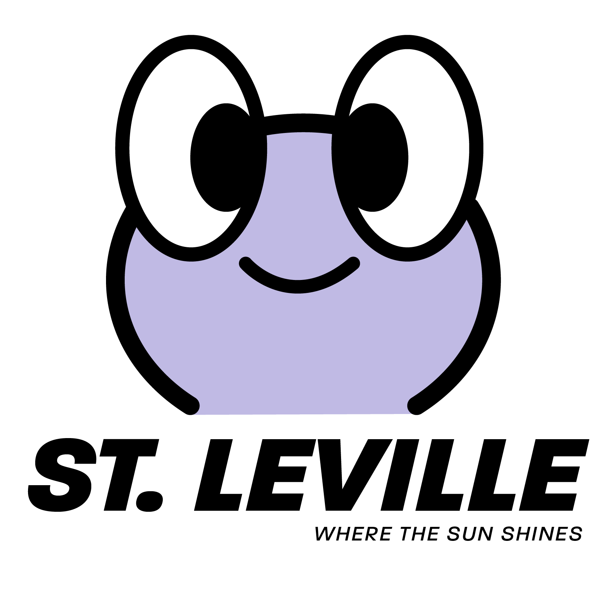
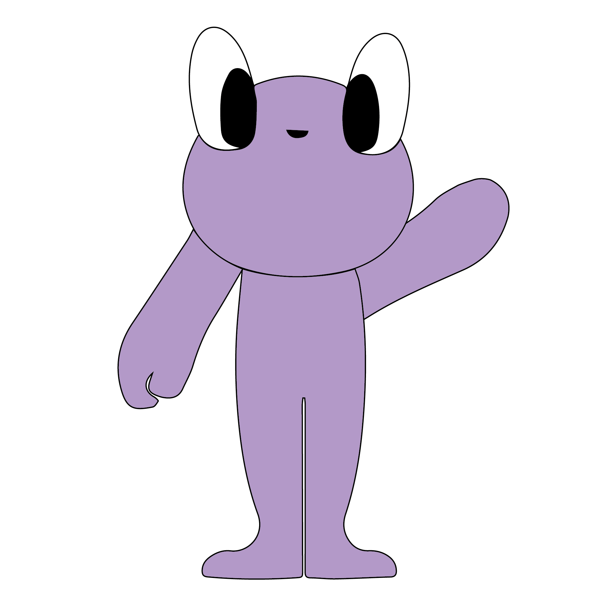

Project
When We Knew LessYear
2022Client
Haich Ber NaDiscipline
Identity, product designBrand identity assets and merchandise for Haich Ber Na's fourth EP, 'When We Knew Less', which is inspired by the fictional location of 'St. Leville'. The mascot for St. Leville, originally designed by Riku Hoshika and later reinterpreted by Josif Bernard, is a key element in the branding, merch, and website. As part of this project, I was responsible for creating keyring merchandise and designing the packaging.

